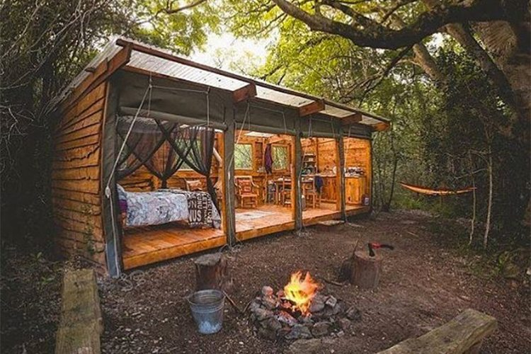
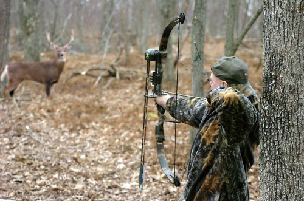
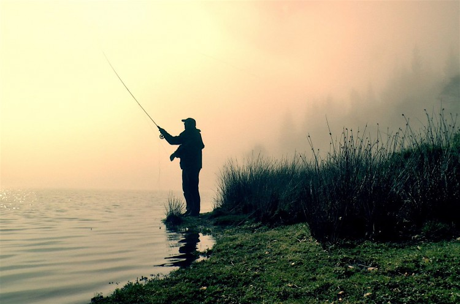
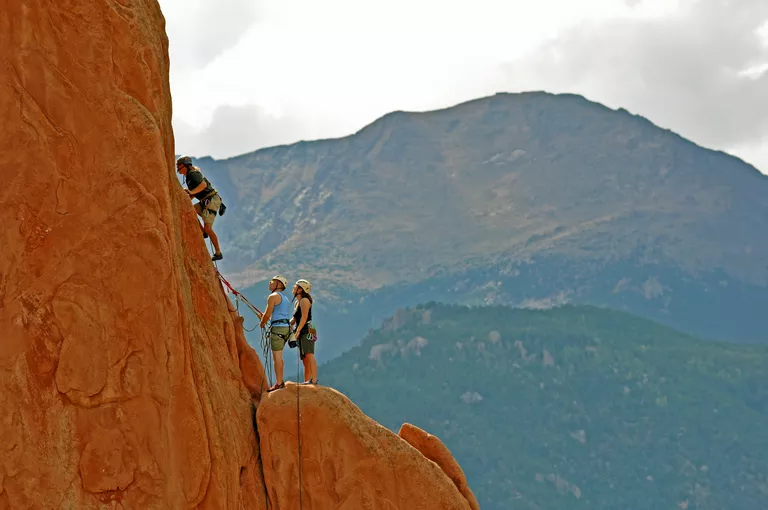
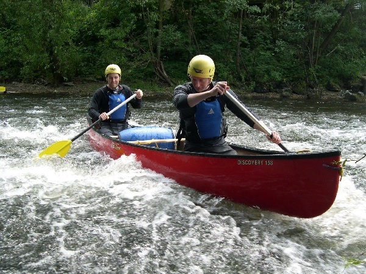

Catergories
Camping

Camping is an outdoor activity involving overnight stays away from home in a shelter, such as a tent. Generally participants leave developed areas to spend time outdoors in more natural ones in pursuit of activities providing them enjoyment. To be regarded as "camping" a minimum of one night is spent outdoors, distinguishing it from day-tripping, picnicking, and other similarly short-term recreational activities. Camping can be enjoyed through all four seasons.
Camping describes a range of activities and approaches to outdoor accommodation. Survivalist campers set off with as little as possible to get by, whereas recreational vehicle travelers arrive equipped with their own electricity, heat, and patio furniture. Camping may be combined with hiking, as in backpacking, and is often enjoyed in conjunction with other outdoor activities such as canoeing, climbing, fishing, and hunting. Fastpacking involves both running and camping
Read More...Hiking

Hiking, walking in nature as a recreational activity. Especially among those with sedentary occupations, hiking is a natural exercise that promotes physical fitness, is economical and convenient, and requires no special equipment. Because hikers can walk as far as they want, there is no physical strain unless they walk among hills or mountains.
Many persons walk alone, mainly on weekends or holidays, but youth clubs and other groups arrange rambles, or hikes. The normal length of the walk undertaken is 7 to 12 miles (11 to 19 km) for a half day or 12 to 20 miles (19 to 32 km) for a full day. Those organized rambles, combining exercise with enjoyment of the countryside, are in country districts surrounding large towns and follow a planned route. Most densely populated European towns have hiking trails outside them.
Read More...Hunting

Hunting is the practice of killing or trapping animals, or pursuing or tracking them with the intent of doing so. Hunting wildlife or feral animals is most commonly done by humans for food, recreation, to remove predators that are dangerous to humans or domestic animals, or for trade. Lawful hunting is distinguished from poaching, which is the illegal killing, trapping or capture of the hunted species. The species that are hunted are referred to as game or prey and are usually mammals and birds
Hunting has long been a practice used to procure meat for human consumption. The meat from a healthy wild animal (such as a deer) that has lived its life freely and on a natural diet of plants generally has a higher nutritional quality than that of a domestic animal that has been raised in an unnatural way. Hunting an animal for its meat can also be seen as a more natural way to obtain animal protein since regulated hunting does not cause the same environmental issues as raising domestic animals for meat, especially on factory farms
Hunting can also be a means of pest control. Hunting advocates state that hunting can be a necessary component of modern wildlife management, for example, to help maintain a population of healthy animals within an environment's ecological carrying capacity when natural checks such as predators are absent or very rare. However, excessive hunting has also heavily contributed to the endangerment, extirpation and extinction of many animals.
Read More...Fishing

Fishing is the activity of trying to catch fish. Fish are normally caught in the wild. Techniques for catching fish include hand gathering, spearing, netting, angling and trapping. “Fishing” may include catching aquatic animals other than fish, such as molluscs, cephalopods, crustaceans, and echinoderms. The term is not normally applied to catching farmed fish, or to aquatic mammals, such as whales where the term whaling is more appropriate. In addition to being caught to be eaten, fish are caught as recreational pastimes. Fishing tournaments are held, and caught fish are sometimes kept as preserved or living trophies. When bioblitzes occur, fish are typically caught, identified, and then released.
According to the United Nations FAO statistics, the total number of commercial fishermen and fish farmers is estimated to be 38 million. Fisheries and aquaculture provide direct and indirect employment to over 500 million people in developing countries. In 2005, the worldwide per capita consumption of fish captured from wild fisheries was 14.4 kilograms, with an additional 7.4 kilograms harvested from fish farms.
Read More...Climbing

Climbing is simply the activity and sport of moving across vertical terrain like cliffs and steep mountain terrain, including ridges and rock and ice faces. Climbing is usually done for recreation and sport, enjoyment in nature and scenic places, and outdoor fun. We spend most of our lives walking upright on sidewalks and trails but when we climb, we learn to use our arms and legs in new ways. We learn about finding balance in both our movements and our lives, finding an equilibrium so we can reach further, so we can climb higher. Climbing is about flow, the concentrated effort to move up a rock face, an effort that requires a unity of mind and body to succeed.
Climbing is the activity of using one's hands, feet, or any other part of the body to ascend a steep object. It is done for locomotion, recreation and competition, in trades that rely on it, and in emergency rescue and military operations. It is done indoors and out, on natural and man-made structures.
Read More...Canoeing

Canoeing is an activity which involves paddling a canoe with a single-bladed paddle. Common meanings of the term are limited to when the canoeing is the central purpose of the activity. Broader meanings include when it is combined with other activities such as canoe camping, or where canoeing is merely a transportation method used to accomplish other activities. Most present-day canoeing is done as or as a part of a sport or recreational activity. In some parts of Europe canoeing refers to both canoeing and kayaking, with a canoe being called an Open canoe.
A few of the recreational forms of canoeing are canoe camping and canoe racing. Other forms include a wide range of canoeing on lakes, rivers, oceans, ponds and streams.
Most present-day canoeing is done as or as a part of a sport or recreational activity. In some parts of Europe canoeing refers to both canoeing and kayaking, with a canoe being called an Open canoe. A few of the recreational forms of canoeing are canoe camping and canoe racing such as canoe sprint and canoe marathons. Other forms include a wide range of canoeing on lakes, rivers, oceans, ponds and streams
Read More...